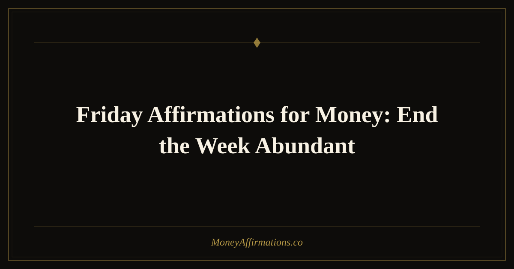

Friday Affirmations for Money: End the Week Abundant

Friday carries a very different energy from Monday. By the end of the week, you may feel proud, tired, behind, relieved, or all of those things at once. Money can feel especially loud on Fridays: paychecks arrive, bills get reviewed, weekend plans tempt the budget, and the mind starts quietly measuring whether the week was "enough."
Friday affirmations for money help you close the week without turning your finances into a scorecard of self-worth. They invite you to celebrate progress, release pressure, and enter the weekend from abundance rather than escape. Instead of spending from stress or checking out from your goals, you use Friday as a financial integration point: a moment to notice what worked, forgive what did not, and remind yourself that prosperity is built through many small weeks lived with intention.
What are Friday affirmations for money?
Friday affirmations for money are present-tense statements created for the end-of-week transition. They combine gratitude, completion, self-trust, and financial openness. Where Monday affirmations set direction, Friday affirmations help you receive the week, learn from it, and carry its gains into rest.
This matters because many people unconsciously spend, scroll, or avoid their finances at the end of the week as a way to discharge stress. Friday money affirmations create a different pattern. They teach your nervous system that reviewing money can feel calm, that celebration does not have to mean overspending, and that rest is part of abundance too. The goal is not rigid control. It is a confident, generous relationship with money that can hold both responsibility and pleasure.
25 Friday affirmations for money
- This Friday, I celebrate every financial step I took this week.
- I end the week grateful for the money I earned, saved, received, and managed.
- My finances are improving, even when progress feels quiet.
- I release the pressure of the week and welcome peaceful abundance.
- This Friday, I trust that more money is already on its way to me.
- I can enjoy the weekend while still honoring my financial goals.
- Money supports my rest, my joy, and my future.
- I am proud of myself for every wise choice I made this week.
- I forgive any money mistakes and carry only the lesson forward.
- My bank account is not my worth; my worth is steady and unlimited.
- I close this week with confidence and open the weekend with gratitude.
- Financial blessings continue to flow to me even while I rest.
- I spend with intention, save with love, and receive with ease.
- This Friday, I choose abundance over anxiety.
- I am allowed to enjoy my money without guilt or fear.
- Every week, I become more skilled at building wealth.
- I welcome weekend opportunities for inspiration, connection, and prosperity.
- My work this week created value, and that value returns to me multiplied.
- I end this week knowing that I am financially supported.
- I do not need to overspend to feel free; freedom already lives within me.
- This Friday, I honor both my present joy and my future wealth.
- I am grateful for every dollar that moved through my life this week.
- Rest makes me more creative, magnetic, and ready to receive.
- I close the week in peace and prepare to welcome even more abundance.
- My financial future is bright, and I am building it with every week I live.
How to use these affirmations
Use Friday affirmations as a gentle closing ritual. Before the weekend begins, take five minutes to sit somewhere quiet and say your chosen affirmations out loud. If you are paid on Fridays, practice them before checking your deposit or making spending decisions. This helps you receive money without immediately moving into fear, urgency, or the impulse to spend just because the week was hard.
After your affirmations, do a very simple money review: one thing you are proud of, one thing you learned, and one choice you want to make this weekend. Keep it compassionate. The purpose is not to punish yourself into discipline. The purpose is to build a relationship with money that feels honest enough to guide you and kind enough that you do not avoid it. Friday becomes a bridge between effort and restoration, not a collapse out of responsibility.
Why Friday is uniquely powerful for your money mindset
The end of the week is a natural accounting moment. Whether you are aware of it or not, your mind reviews the week's financial activity every Friday — what came in, what went out, what felt good, and what you would change. This internal audit happens automatically. The question is not whether it happens, but whether you run it with compassion or with judgment.
Friday money affirmations give you a framework for running that review consciously and kindly. Research in habit formation shows that weekly reflection rituals significantly strengthen long-term goal adherence. When you combine honest review with a positive identity statement — "I am building wealth one week at a time" — you link evidence to belief, which is far more powerful than either one alone.
There is also a behavioral reason Friday matters. The transition into the weekend is when financial discipline tends to slip most visibly. Social spending, impulsive purchases, and emotional shopping spike reliably between Friday afternoon and Sunday evening. Friday affirmations create a deliberate pause in that pattern. They remind you that rest is available without overspending, that celebrating the week does not require debt, and that enjoyment and financial responsibility are not opposites.
Using Friday as a weekly money integration point also builds what psychologists call financial self-efficacy — the felt sense that you are capable of managing your money well. Each time you close the week with intention rather than avoidance, that belief strengthens slightly. Over months, the compounding effect of that one weekly ritual quietly becomes one of the most stabilizing forces in your relationship with money.
Tips to make them work faster
- Pair them with a weekly money check-in. Look at your numbers after affirming, not before, so your mindset is steady first.
- Create a joyful spending boundary. Decide what you can spend this weekend with full permission, then enjoy it without guilt.
- Celebrate non-money wins. Confidence, discipline, rest, and clarity are all forms of wealth that support financial growth.
- Release the week consciously. Say one affirmation while breathing out slowly, imagining financial stress leaving your body.
- Choose a weekend receiving practice. Notice compliments, discounts, gifts, ideas, or moments of ease as evidence of abundance.
Frequently Asked Questions
Why use money affirmations on Friday?
Friday is a natural moment of reflection and transition. You are closing one cycle and preparing to rest before the next. Money affirmations help you end the week from gratitude and self-trust rather than stress. That emotional shift can influence how you spend, save, rest, and plan during the weekend.
Can Friday affirmations help me stop overspending on weekends?
They can help because overspending is often emotional before it is practical. Friday affirmations calm the feeling of deprivation or exhaustion that leads to impulsive choices. When you remind yourself that you are already supported and free, it becomes easier to choose spending that genuinely nourishes you instead of spending that tries to soothe stress.
Should I review my finances every Friday?
A short Friday review can be very helpful, especially if you keep it simple and nonjudgmental. You do not need a full budget session every week. Even three minutes of checking balances, noticing progress, and choosing one weekend intention can train your brain to see money as something manageable rather than something to avoid.
To keep building a healthier financial mindset through every part of the week, explore the full money affirmations collection and choose the statements that feel most supportive right now.